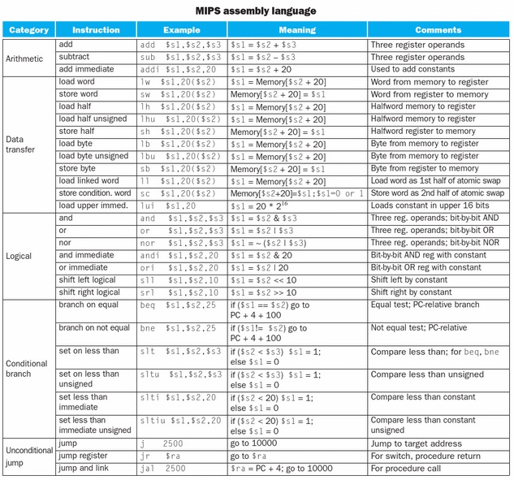

EECS 370 FALL 2012 FINAL EXAM STUDY GUIDE
by Evan Hahn, Scott Godbold, Jacob Nestor, Luke Anderson, Vicki Li, Olivia Nordquist, Jason Freeman
Add your name if you helped!
Misc. things to know
Bytes and bits
Nanoseconds and hertz
Instruction sets
LC-2K
LC2K Quick Reference
MIPS
Misc.
Addressing p
Memory layout for data types and structures
The size of things
Notes
Floating point conversions
Decimal to floating point
Floating point to decimal
Floating point addition
Callers and callees
Text, static, stack, heap, symbol
Single cycle datapath
Multicycle datapath
Pipelining
Steps
Data hazards
Ways to fix
Control hazards
Ways to fix
Structural hazards
Branch prediction
Exceptions
For in-class pipeline
Performance
Performance Comparisons
Caches
Organization
Locality
Misses
Cache types
Cache configuration
Example
Cache manipulation (examples from Midterm 2)
Virtual memory
Virtual memory configuration
Examples
Multilevel page tables
Storage
Exam review lecture notes
Notes from final review session
Winter 2010, #11
Fall 2010, #4
Examples
License information
Misc. things to know
Bytes and bits
- 1 byte = 8 bits
- 1 KB = 210 bits
- 1 MB = 220 bits
- 1 GB = 230 bits
- 64KB = 216 bits
- 4 GB = 232 bits
- 1 word = 4 bytes = 32 bits (note: this is not always true -- some words can be different sizes, but is true for LC-2K and MIPS)
- 210 is about 1 thousand = 1,024 = 1 MB
- 220 is about 1 million = 1,048,576 = 1 KB
- 230 is about 1 billion = 1,073,741,824 = 1 GB
Nanoseconds and hertz
- 1GHz = 1 / 1ns
- 100MHz = 1 / 10ns
- 200MHz = 1 / 5ns
- 1MHz = 1 / 1000ns
Instruction sets
LC-2K
- all instructions increment PC
- LC-2K word = 32 bits
- add (000): add regA with regB, store in destReg
- nand (001): nand regA with regB, store in destReg
- lw (010): load from memory at offsetField + regA, put it into regB
- sw (011): store memory at offsetField + regA, from regB
- beq (100): if regA == regB, branch to PC + 1 + offsetField
- jalr (101): first, store PC + 1 into regB. Then branch to address in regA.
- halt (110): stop
- noop (111): do nothing
- bits 24-22: opcode
- bits 21-19: reg A
- bits 18-16: reg B
- bits 15-3: unused (should all be 0)
- bits 2-0: destReg
- bits 24-22: opcode
- bits 21-19: reg A
- bits 18-16: reg B
- bits 15-0: offsetField (a 16-bit, 2's complement number with a range of -32768 to 32767)
- bits 24-22: opcode
- bits 21-19: reg A
- bits 18-16: reg B
- bits 15-0: unused (should all be 0)
- bits 24-22: opcode
- bits 21-0: unused (should all be 0)
LC2K Quick Reference
000 add $A $B $C $C = $A + $B
001 nand $A $B $C $C = !($A & $B) or ~($A & $B) (bitwise NOT)
010 lw $A $B Offset $B = Mem[$A + Offset]
011 sw $A $B Offset Mem[$A + Offset] = $B
100 beq $A $B Offset if($A == $B) PC = PC + 1 + Offset
101 jalr $A $B $B = PC + 1; PC = $A
110 halt stop
111 noop
MIPS

Misc.
- important that when the ISA changes, backwards compatibility must be maintained
- RISC: reduced instruction set computing (MIPS, LC2K) -- small instruction set. A load/store architecture. Instructions tend to be the same size too.
- CISC: complex instruction set computing -- many different types of instructions, fewer instructions per program. Instructions do more things -- for example, there might be something in CISC that would take five instructions in RISC.
- memory access: only LW and SW can do so in MIPS/LC2K
- little endian: increasing numeric significance with increasing memory addresses
- big endian: opposite (duh), most significant bit is first, LC-2K and MIPS are both big-endian
- ex: register contains 0A0B0C0D, stored big-endian style 0A | 0B | 0C | 0D, little endian: 0D | 0C | 0B | 0A
Addressing p
- direct: memory address is in instruction, immediate value
- useful for addressing locations that do not change during execution, eg branch target addresses, global/static variable locations
- indirect: file directive, eg: mem[mem[100]]
- register indirect: r1 ← mem[r2]
- base + displacement: r1 ← mem[r2 + 100]
- good for accessing class objects or structs
- most common in exam questions
- PC relative: variant of base + displacement, used for branch instructions
- advantage: code-position is independent so they can be loaded anywhere in memory without requiring address adjustment
Memory layout for data types and structures
The size of things
- double = 8 bytes
- float = 4 bytes
- int = 4 bytes
- short = 2 bytes
- long = 4 bytes
- char = 1 byte
- pointer = 4 bytes (pointer is usually always of WORD size)
Notes
- item must start on a evenly divisible address (i.e. int must start on an address divisible by 4)
- struct size is based on a multiple of their largest element structs must start on a multiple of their largest ELEMENTARY element.
(structs are NOT elementary data types)
(double, int, short, long, char, and pointer are all elementary data types)
- when asked for total size, do not forget to include implied cushion bits at the end, following stuff must also start on a multiple of its own data type
- See Homework 2 Problem 2 for an in depth example
Floating point conversions
Decimal to floating point
http://sandbox.mc.edu/~bennet/cs110/flt/dtof.html
ex. 2.625
0. convert to binary & normalize
- 2 = 10
- convert decimal portion: 0.625 * 2 = 1.25 → 1
0.25 * 2 = 0.5 → 0
0.5 * 2 = 1.0 → 1
- so 2.625 in binary is 10.101 × 20
- normalize: 1.0101 × 21
1. signed bit: first bit of significance/mantissa (positive or negative)
- 1.0101, 0101 is significance/mantissa
- 0 is signed bit, positive
2. exponent: next 8 bits (127 + shift amount)
- 1.0101 × 21
- exponent = (127 + 1)
3. mantissa: remaining 23 bits (remaining values to the right of the decimal)
- extend .0101 with 0s
4. floating point # = sign bit, exponent, mantissa
- 128 in binary 10000000
- 0 10000000 01010000000000000000000
- 01000000001010000000000000000000
Floating point to decimal
http://sandbox.mc.edu/~bennet/cs110/flt/ftod.html
1. Given 32-bit floating point, bits for exponent 8 bits
2. Separate number into signed bit (first bit), exponent (next 8 bits), and mantissa (the remaining)
3. Then:
decimal =
Floating point addition
You could learn how to do this, or you could just do the whole thing in decimal if you wanted. Because it’s really not that bad.
Callers and callees
- caller saves: the process calling the subroutine must save the registers if it wants to continue to use them (saves/loads over function calls)
- callee saves: the process called by the subroutine must save the registers if it wants to use that register (saves/loads at the beginning and end of a function instance)
- answer is ALWAYS 1 or 0 (pairs...obviously, it can be 2 if lw and sw are treated separately) for runtime execution
Text, static, stack, heap, symbol
- text: code
- static: globals and statics. They go into data segment and symbol table
- stack: small variables, parameters to subroutines, local variables
- heap: big variables, not in the stack, dynamically allocated variables (call to malloc())
- symbol table: all global and static variables with a symbol but not initialized to a value, function declarations, and function use
- relocation table: use of the values from the symbol table, relocates the actual values, all calls to functions are here. Local variables which are on the stack need not be relocated because of relativity aka honey badger don’t give a shit what their values are when the local variables pass out of scope
Single cycle datapath
- Instruction memory read
- Register file read
- ALU
- Data memory access
- Register file write
- (general)
- does one instruction at a time until it is done
Multicycle datapath
Multicycle reduces hardware by sharing functional units among cycles. The limiting factors are memory access, register file access, or an ALU operation: you cannot do more than one in a cycle. Replacing the 3 ALUs of single cycle with 1 ALU for the multi requires a larger MUX -- design questions will probably involve buggy inputs to the MUX’s wires.
- Multiple clocks per instruction imply different control signals
- All operations that occur in one cycle are capable of acting in parallel, breaking the execution into separate cycles maximizes performance
- Fetch stage: like pipeline, gets instruction from memory, computes PC+1 (address of next instruction, if not word-addressed)
- Decode: does a lot of harmless but potentially useless actions -- reads regA and regB, computes branch target. Advantage of doing more than necessary: decreases number of clock cycles per instr
- Execute: unique for each instruction
- Cycles/instr according to class multicycle = 5 for lw, 4 for everything else
- CPI: weighted average, eg 4(!lw%) + 5(lw%)
- Clock: slowest single cycle among all the steps, equal to the cost of whichever limiting factor (mem read, ALU operation, reg read) is the highest
- Similar to pipelining, except you only go to MEM if you have to and the throughput of multicycle. Does that make sense to anyone besides me? - Not really. It’s similar to pipelining because its speed is limited by the slowest individual part, but other than that it’s quite different.
- CPI of multicycle is higher than pipelined and single cycle
- clock rate is as fast as pipelined and both are faster than single cycle
- Basically, you do more cycles per instruction. Still only doing one at a time though. This allows us to lower the clock period (limited to slowest stage instead of slowest instruction)
Pipelining
Basically, pipelining allows you to do multiple instructions at once. Each in their own stage/section of the processor. More expensive and complex hardware, but you get a much lower CPI out of it.
Steps
- Fetch
- get instruction from memory
- increment PC
- write all needed to IFID register
- Decode
- read in the necessary registers
- calculate the offset
- pass register data, instruction, pc+1, and offset in IDEX register
- Execute (ALU)
- calculates pc+1+offset in case this is a branch
- performs ALU operation on regA and either regB or offset
- stores instruction, pc+1+offset, aluResult to EXMEM register
- Memory write
- uses aluResult to find the target or lw or sw
- the op/destination bits of the instruction control r/w access
- does nothing if not a lw or sw
- passes along aluResult or Memory read data and instruction to MEMWB register
- Register write
- writes memData or aluResult back to the registers
- op bits used to control write access to the registers
Data hazards
- Data hazards occur when an instruction reads in a register that should have been changed but hasn’t hit write back yet.
- If resolved purely by forwarding, will have no impact on CPI
- ADD/NAND effect 2 cycles if data forwarding is not present.
Ways to fix
- Avoid: make sure the code is hazard-free before compiling by inserting necessary noops
- longer pipelines need more noops, so your code wouldn’t work on other processors
- program gets larger
- CPI is still 1, but now more instructions are noops
- Detect and stall: is there a hazard? if so, insert no-ops on the fly (during execution) until the hazard passes
- increases the CPI when encountering a hazard
- easily avoidable
- Detect and forward: see that there’s a hazard and get the value from the right pipeline register before it’s written back
- not foolproof, a stall may still be required
- BEQ has to predict whether it’s taken or not. when a prediction is wrong, predicted instructions are squashed (noops are inserted)
Control hazards
- Branch instructions change the PC, but not until memory writeback so we need to account for that.
- Any dependency, no matter how far down in the code, counts
- Pipelining is a method in which to deal with dependencies but they still exist, regardless of if forwarding is necessary
- If resolved by a correct prediction, will have no impact on CPI
Ways to fix
- Avoid: insert noops following a branch
- breaks legacy code
- program size increases
- program execution slows down
- Detect and stall: delay all fetches until the branch is resolved by holding instruction in fetch and passing noops to decode. Must wait for each instruction to be decoded before fetching the next (in case its a beq or jalr)
- CPI increases
- not always necessary -- the branch isn’t always taken
- if mistaken it's fine as long as no instruction was completed
- Speculate & squash if wrong
- speculate: keep fetching instructions until we know that branch is really taken
- squash:
- Send a noop to Decode, Execute, and Memory
- Send target address to PC
- Penalty depends on size of pipeline.
Structural hazards
- Affected by structure of pipeline, ie not enough memory
- Cannot access lw in ID and the next instruction in fetch at the same time
- Important implication: not all hazards are dependencies (and, obviously, not all dependencies are hazards)
Branch prediction
- Table of target addresses for previous branches
- Store taken address
- Fall through address just PC + 1
- 2 bit counter for each entry
- each time a branch is taken, increase (full at 3)
- each time a branch isn't taken, decrease (empty at 0)
- predict based on counter (0 or 1 not taken, 2 or 3 take)
(Strongly Not Taken - 0) ⇔ (Not Taken - 1) ⇔ (Taken - 2) ⇔ (Strongly Taken - 3)
If taken, shift one to the right. If not taken, shift one to the left
Exceptions
- When something unexpected happens during execution...
- Flush pipeline and jalr to exception handler
- If unsure (early fetch instruction down potentially wrong path) delay handling until it is known to be an issue
- Page fault, divide by zero, etc...
For in-class pipeline
- lw hazard inserts 1 noop instruction
- beq hazard (wrong prediction) inserts 3 noop instructions
Performance
- frequency: how many processor cycles per second? 500 MHz = 500E6 cycles per second
- cycle time = 1/f. 2 ns/cycle = 500 MHz
- CPI: clock cycles per instruction, on average
- Single cycle datapath = 1 / (instruction mem access + regfile read + ALU + data mem access + regfile write)
- Multicycle datapath = 1 / largest component delay
- Pipeline datapath = 1 / largest component delay
- Runtime = # instructions × CPI × (1 / clock frequency)
- Time per instruction = CPI × 1/clock rate
- Single cycle datapath = 1
- Multicycle datapath = sum(%instructions × number of cycles/instructions)
- e.g. %ADD × 4 + %NAND × 4 + %LW × 5 + %SW × 4
- Pipeline datapath = 1 + total of below:
- Branch misprediction = %BEQ × %branches taken × 3 (extra cycles taken)
- Cache miss = %I-cache miss × #memory access cycles + (%LW + %SW) × D-cache miss × memory access cycles
- Load dependency = %LW × %(LW followed by a dependent instruction)
- In general for the above, CPI increase = %instructions * %instructions that satisfy condition * # of cycles required to satisfy each condition
Performance Comparisons
| Lowest/Cheapest/Fastest | Middle | Highest/Most Costly/ Slowest |
CPI | Single Cycle | Pipelined | Multi Cycle |
Expected clock rate (HZ) | Multi Cycle/ Pipelined (tie) | - | Single Cycle |
Datapath implementation Cost | Multi Cycle | Single Cycle | Pipelined |
Time taken to run a program consisting of 100 branches with a 50% mispredict rate on 100 MHz | Single Cycle | Pipelined | Multi Cycle |
Caches
Organization
- Cache memory can copy data from any part of main memory
- Tag (CAM) has a block (SRAM)
- To access the cache, compare reference address with tag. if they match, pull from cache, otherwise pull from main memory
- You can search through the CAM
- You can write to the CAM, which replaces old stuff, or maybe not-recently-searched-for stuff (usually more performant).
- Tag match = hit. no match = miss.
- Cache line: tag and block (blocks can be one byte, two, etc)
- First, you check your cache. then you check memory.
- You COULD check both in parallel but you don't because it'd use more power
Write-Back vs. Write-Through
- Write-back: Uses a dirty bit. The bit is set to 1 (dirty) when data is altered, but memory is not updated until the block is evicted.
- Write-through: Writes all changed data to memory immediately.
- Write-back caches tend to have fewer writes than write-through caches (and thus are more efficient)
Locality
- Temporal locality: you're more likely to access memory that you accessed recently
- Generally uses LRU replacement policy
- Any data referenced that is not in the cache should be put into the cache
- Spatial locality: you're more likely to access memory nearby
- Better to use large block size
- Instruction caches tend to have greater spatial locality than data caches
- Increasing the block size of a cache tends to result in higher hit rates due to spatial locality
Misses
- You'll always have these at the start of every set
- Also known as "cold start" misses
- To find: simulate with a cache of unlimited size (cache size = memory size)
- To fix: reducing the number of blocks by increasing block size. you can also preload things into the cache
- Your cache isn't large enough
- To find: simulate with a fully-associative cache of the intended size
- To fix: build a bigger cache
- You can't store cache blocks wherever you want to
- To find: simulate with actual intended cache
- To fix: increase associativity
Cache types
- You can think of it as "fill up an array, then find good spots for it"
- LRU policy basically picks a good spot. One COULD just loop around, but that's not the most efficient way to use a fully-associative cache.
- Direct-mapped caches are kind of like hashmaps
- One cache line where a block can reside
- Direct mapped cache has associativity of 1
- Kind of like hashmaps but with "buckets". you basically "hash" the data and narrow it down to only a few options, and then it's like a fully-associative cache
- As associativity of a cache increases (with no other changes)...
- Fewer sets, so size of the index decreases
- Total number of dirty bits stays the same
- Size of tag increases
Cache configuration
- number of blocks = number of cache lines = cache-size / block-size
- number of sets = number of blocks / associativity
- fully associative cache: always 1 set
- direct-mapped cache: associativity is 1
- 2-way associative cache: associativity is 2
- 4-way associative cache: associativity is 4
- block offset size = log2(block-size in words) bits
- set index size = log2(# sets) bits
- set index for a given address = (target address / block size) % #sets
- tag size = (Address size) – (set index size) – (block offset size) bits
- | Tag | Index | Offset |
Example
You have a cache size of 16 bytes for a 2-way associative cache, LRU policy, address size of 16 bits, byte addressable, and a block-size of 2 bytes.
- # blocks = 16 bytes / 2 bytes = 8 blocks
- # sets = 8 blocks / 2 associativity = 4 sets
- block offset size = log2(2 bytes / 1 byte) = 1 bit (the 1 byte comes from being byte addressable)
- set index size = log2(4) = 2 bit
- tag size = 16 – 2 – 1 = 13 bit
- | 13 | 2 | 1 |
Cache manipulation (examples from Midterm 2)
Change (assume all else constant): | Effect: |
Increase block size | Decrease # of compulsory misses |
Increase cache size | Decrease # of capacity misses |
Multiply Associativity x N (N is a power of 2) | - Tag size = Tag size + log2N - # Sets = # Sets/N - Decrease # bits in Index |
Virtual memory
- The operating system translates a memory address to a physical address -- they're different: virtual implies a degree of indirection
- Requires memory for page table, has additional latency due to one or more additional memory access/TLB access per memory access from the program
- Every process "talks to" different virtual memory. this means that you can't corrupt memory across programs:
- Protection: others can’t mess with us
- Transparency: we can’t mess with other’s memory
- Allows application to use more memory than there is DRAM available
- Each virtual page has a corresponding pointer to real memory
- "Evicting" something from physical memory moves it to disk and changes the pointer
- Pages are same size in virtual memory as physical memory as disk
- OS and hardware coordinate to find virtual memory tables
- Page = virtual memory block
- Miss = page fault. usually an exception
- Exploit temporal locality, spatial locality due to huge block size
TLB: Translation Lookaside Buffer
- Basically a cache for the page table
- In this class, they’re fully-associative
- Necessary for supporting virtual memory
- Average memory access latency = total of below latencies (for each case):
Case | Latency |
TLB hit, cache hit | TLB hit rate × Cache hit rate × total cycles to access both |
TLB hit, cache miss | TLB hit rate × Cache miss rate × (total cycles to access both + # accesses to main memory) |
TLB miss, cache hit | TLB miss rate × Cache hit rate × (total cycles to access both + # accesses to main memory) |
TLB miss, cache miss, no page fault | TLB miss rate × Cache miss rate × (1 - page fault rate) × (total cycles to access both + 2 × accesses to main memory) |
TLB miss, cache miss, page fault | TLB miss rate × Cache miss rate × page fault rate × (total cycles to access both + accesses to main memory + accesses to hard drive) |
- The cache is physically addressed
- The cache, TLB and memory have the same access time no matter if it is a hit or miss
- The page table is always kept in memory
Virtual memory configuration
- # of virtual pages = 2^(length of virtual address space) / (# bytes per page)
- # physical pages = amount of physical bytes / bytes per page
- # pages per table = bits of virtual page / # levels
- # bits per level = log2(# physical pages) / # levels
Examples
32 bit virtual address space. 4 GB of physical memory. 1 KB pages. 4 B page table entry.
- # of virtual pages = 232 virtual bytes / 210 bytes per page = 222 virtual pages
- # of physical pages = 4 physical gigabytes / 210 bytes per page = 232 physical bytes / 210 bytes per page = 222 physical pages
- virtual page size = address bits – log2(page size)
- # of addressable physical pages = 2^(size of physical memory ie. 4 GB = 232 B of physical memory)/(# Bytes per page ie. 4KB = 2^12 Bytes/page)
Multilevel page tables
- # pages per table = bits of virtual page / # levels
- # bits per level = log2(# physical pages) / # levels
- Advantages of multilevel page tables
- Smallest case is significantly smaller
- Largest case is essentially O(single_level); there is some overhead but the orders of magnitude make it obsolete
- Why we rarely use multilevel outside of exam questions
- In hardware, it is O(1) to convert from virtual to physical address in single-level page table
- Multilevel simulates a fat b tree: search is O(logn)
- Size of multilevel page table:
- Min size = (1 superpage table + 1 page table) * 2^(#bits/level) * #Bytes/page table entry
- Max size = (1 super page table + 2^(#bits/level) page tables) * 2^(#bits/level) * #Bytes/page table entry
=
x is bits per page, num_tables*size --> (1 + 2^x + 2^2x + ... + 2^(num_pages - 1)x)x(2^x x size/page) = max size
min size = page size x num_pages in 1 table x num_levels
Storage
There's a dichotomy of speed and cost. How do we get the best properties of multiple memory technologies?
- fast: ~2ns access time
- expensive
- Fancy normal ram that is in the actual processor. Registers, data storage, etc.
- slower: ~60ns access time
- much cheaper
- this is what you buy in a store
- real slow
- real cheap
- made of magnets
- nonvolatile: your data is saved when the power is off, unlike SRAM or DRAM
- optical disks (CDs, DVDs)
- the slowest
- basically free
- use small array of SRAM for the cache. accessed frequently
- use bigger amount of DRAM for main memory
- use disk for persistent storage and virtual memory
- architectural view of memory is "just a big array"
- machine language doesn't know about SRAM or DRAM or whatever, nor is register 1 truly register 1.
Exam review lecture notes
- dependency: X is dependent on Y
- hazard: a dependency that creates an issue. The takeaway from this: hazards aren’t dependencies, though they may be caused by them.
- control hazard: dependency where what happens in the program is dependent on whether the branch is taken or not
- data hazard: dependency where the needed register for one instruction has yet to be rewritten by a previous instruction
Notes from final review session
Winter 2010, #11
- a is live across the first call to bar but not the rest of the times
Fall 2010, #4
- a variable is considered to be live if it’s assigned before a jalr is called and is still used after
- multiple return statements can cause callee-saved registers to be not 2
Examples
- The CPI for a single-cycle processor is generally ≤ than that of a pipelined processor.
- The CPI of a multi-cycle processor is generally ≥ than that of a pipelined processor.
- The clock period of a pipelined processor is generally < than that of a single-cycle processor
- The cycle time for a single-cycle processor is generally ≥ than that of a multicycle processor.
- The cycle time for a single-cycle processor is generally ≥ than that of a pipelined processor.
- The cycle time for a multi-cycle processor is generally ≤ than that of a pipelined processor.
- The average number of stalls due to data hazards for a multi-cycle processor is generally ≤ than that for a pipelined processor.
- The memory access latency, in nanoseconds, for a multi-cycle processor is generally = than that for a pipelined processor.
- The number of misses incurred by a direct mapped cache is generally ≥ than that for a fully associative cache that is the same total size.
- The access time, in nanoseconds, of a direct mapped cache is generally ≤ than that for a fully associative cache that is the same total size.
- For programs with high spatial locality, the number of misses in a cache with a small block size is generally ≥ than that for the same-sized cache with a larger block size
License information
This study guide is licensed under a Creative Commons Attribution 3.0 Unported license.
{kind=link}